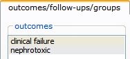
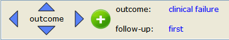
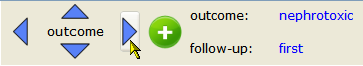
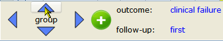
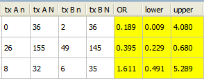
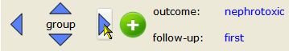
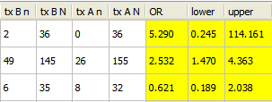

A data set can contain multiple outcomes, follow-ups, and treatment groups. For instance, the example data set amino.oma contains two outcomes, as shown in the edit dataset dialog.

You can select the outcome you want to work with using the left-right navigation arrows at the bottom of the data table.

The currently selected outcome is displayed to the right of outcome. Click the right or left arrow keys to advance to the next outcome

Similarly, you can use the up-down navigation arrows to select one of the components of the data set:
For example, click the up-down arrows until you reach group.

The currently selected pair of treatment groups is displayed at the top of the data window.

In this example, there is just one pair of treatment groups. However, the treatment groups can be displayed in two different orders: tx A - tx B or tx B - tx A. To switch the order, click the right navigation arrow.

The order of treatment groups is reversed, as shown below.

Note: If there are more than two treatment groups, the right-left arrows cycle though all possible ordered pairs of treatment groups.
| Navigating a Dataset | Adding a Covariate | |